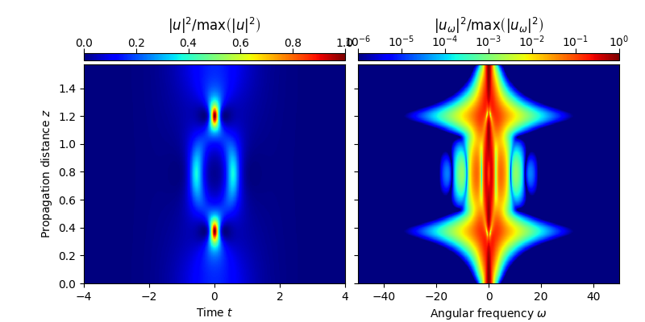

Note
Click here to download the full example code
Third-order nonlinear Schrödinger soliton¶
This example solves the standard nonlinear Schrödinger equation, given by
\[\partial_z u = -i \frac{\beta_2}{2}\partial_t^2 u + i\gamma |u|^2 u,\]
wherein \(u = u(z, t)\) represents the slowly varying pulse envelope, \(\beta_2=-1\) is the second order dispersion parameter, and \(\gamma=1\) is the nonlinear parameter. As initial condition, a higher-order soliton
\[u_0(t) = N_{\rm{sol}} \sqrt{\frac{|\beta_2|}{\gamma \, t_0^2}} {\rm{sech}}(t/t_0),\]
of duration \(t_0=1\), and soliton order \(N_{\rm{sol}}=3\) is considered. The propagation is performed up to \(z_{\rm{max}}=\pi/2\), i.e. for one soliton period.
import sys; sys.path.append('../')
import fmas
import numpy as np
from fmas.models import ModelBaseClass
from fmas.config import FTFREQ, FT, IFT, C0
from fmas.solver import SySSM
from fmas.grid import Grid
from fmas.tools import plot_evolution
class NSE(ModelBaseClass):
def __init__(self, w, b2 = -1.0, gamma = 1.0):
super().__init__(w, 0.5*b2*w*w)
self.gamma = gamma
@property
def Lw(self):
return 1j*self.beta_w
def Nw(self, uw):
ut = IFT(uw)
return 1j*self.gamma*FT(np.abs(ut)**2*ut)
def claw(self, i, zi, w, uw):
return np.sum(np.abs(uw)**2)
def main():
# -- DEFINE SIMULATION PARAMETERS
# ... WAVEGUIDE PROPERTIES
b2 = -1.0
gamma = 1.
# ... TEST PULSE PROPERTIES
t0 = 1. # soliton duration
P0 = np.abs(b2)/t0/t0/gamma # peak-intensity
LD = t0*t0/np.abs(b2) # dispersion length
N_sol = 3 # soliton order
# ... COMPUTATIONAL DOMAIN
t_max = 50.
t_num = 2**12
z_max = 0.5*np.pi*LD
z_num = 1000
z_skip = 2
# -- INITIALIZATION STAGE
# ... COMPUTATIONAL DOMAIN
grid = Grid( t_max = t_max, t_num = t_num, z_max = z_max, z_num = z_num)
# ... NSE MODEL
model = NSE(grid.w, b2, gamma)
# ... Z-PROPAGATION USING SYMMETRIC SPLIT-STEP FOURIER METHOD
solver = SySSM(model.Lw, model.Nw)
# ... INITIAL CONDITION
u_0t = N_sol*np.sqrt(P0)/np.cosh(grid.t/t0)
solver.set_initial_condition(grid.w, FT(u_0t))
# -- RUN SIMULATION
solver.propagate(z_range = z_max, n_steps = z_num, n_skip = z_skip)
plot_evolution( solver.z, grid.t, solver.utz,
t_lim = (-10,10), w_lim = (-50,50))
if __name__=='__main__':
main()
Total running time of the script: ( 0 minutes 1.643 seconds)